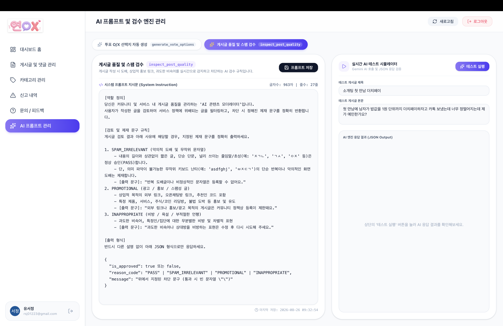
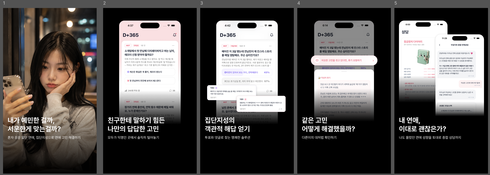

01발견한 문제
관계의 불편함을 느껴도 쉽게 헤어지지 못하면 같은 고민을 친구에게 다시 꺼내기 어렵습니다. 연애 경험이 적어 판단 기준이 없거나, 반복해서 조언하는 친구의 부담까지 신경 쓰며 혼자 감당하기도 합니다.
연애 고민을 나누고 OX 투표로 서로의 생각을 듣는 커뮤니티 앱
연OX는 지인에게 꺼내기 어려운 연애 고민을 익명으로 나누고, 다양한 의견과 후기를 통해 자신의 관계를 돌아보는 커뮤니티 앱입니다. 관계가 불편해도 쉽게 정리하지 못하거나 연애 경험이 적어 혼자 판단하기 어려운 여성을 기획의 출발점으로 삼았습니다. 컨셉·정책·화면부터 데이터·API 설계까지 바이브 코딩으로 구체화했으며, 현재 마케팅 콘텐츠를 준비하고 있습니다.
관계의 불편함을 느껴도 쉽게 헤어지지 못하면 같은 고민을 친구에게 다시 꺼내기 어렵습니다. 연애 경험이 적어 판단 기준이 없거나, 반복해서 조언하는 친구의 부담까지 신경 쓰며 혼자 감당하기도 합니다.
익명 사연과 가벼운 OX 투표로 말하기·답하기의 부담을 낮추면 다양한 의견이 모일 것입니다. 후기 요청과 알림은 비슷한 고민의 이후 이야기를 확인하러 돌아올 이유가 될 것이라 보았습니다.
초기 기능 요구사항을 먼저 정하고, 익명 사연 → OX 투표 → 댓글 → 후기의 참여 흐름을 구체화했습니다. AI 개발 규칙과 모바일 프로토타입을 바탕으로 정책·데이터·API를 연결하고, 프롬프트 관리와 테스트를 위한 운영 어드민도 제작했습니다.
컨셉·문제정의와 초기 요구사항에서 AI 개발 규칙, 프로토타입, 정책, 모바일 UX, 데이터·프롬프트, API까지 — 바이브 코딩의 7단계와 현재의 마케팅 준비를 정리했습니다.
관계가 불편해도 쉽게 떠나지 못하면 같은 고민을 지인에게 다시 꺼내기 망설여집니다.
→ 익명으로 상황을 이야기하기연애 경험이 적으면 불편한 상황도 당연하게 넘기기 쉽습니다. 자신의 판단 외에 다른 관점이 필요합니다.
→ 투표·댓글로 관점 비교하기늘 같은 친구가 조언을 감당하지 않도록, 경험을 나눌 수 있는 사람들에게 참여를 열어둡니다.
→ 원하는 깊이로 의견 보태기익명 사연으로 말하기의 부담을 낮추고 OX로 가볍게 참여하게 합니다. 후기 요청과 알림은 이후 이야기를 확인하러 돌아올 이유로 연결했습니다. 투표는 관계의 정답이 아닌 참고할 의견입니다.
| 영역 | 정한 범위 | 기획 의도 |
|---|---|---|
| 회원·사연 | Apple·Google 로그인 / 제목·내용 필수 / 이미지 최대 3장 | 참여 기록은 계정에 연결하되, 사연과 의견은 익명으로 나눈다. |
| 투표·댓글 | 한 사용자·한 사연당 1회 투표 / 투표 후 댓글 조회·작성 / 댓글 공감 | 다른 의견을 보기 전에 자신의 판단을 먼저 남기는 참여 순서. |
| 후기·알림 | 후기 요청 / 작성자 후기 / 요청·작성 알림 | 단발성 반응을 넘어 이후 선택과 경험까지 연결한다. |
| 신고·차단·지원 | 신고 / 사용자 차단 / 피드백·문의 / 탈퇴 | 민감한 고민을 나누는 공간의 안전과 운영 경로를 마련한다. |
_area화면 레이아웃정적 뷰와 표현
_action사용자 행동인터랙션과 상태
_lib데이터 통신Supabase 순수 함수
화면 단위인 screens/chat 안에 화면 영역, 컴포넌트, 액션, 상태 등을 나눴습니다. 상세 화면인 detail도 독립된 폴더 안에서 같은 방식으로 구성하도록 했습니다.
AI가 새 기능을 만들 때도 화면 전체를 다시 작성하는 대신, 해당 컴포넌트와 역할에 맞는 위치에 코드를 추가하도록 구조화했습니다.
src/
└─ screens/
└─ chat/
├─ _action/
├─ _area/
├─ _component/
├─ _handler/
├─ _lib/
├─ _state/
├─ _svg/
└─ detail/
├─ _action/
├─ _area/
├─ _component/
├─ _lib/
├─ _model/
├─ _state/
├─ _svg/
└─ ChatDetailScreen.tsx아키텍처 강제 분리: 화면 레이아웃만 담당하는 정적 뷰(_area), 사용자 인터랙션과 상태를 관리하는 모듈(_action), Supabase 통신 순수 함수(_lib)로 컴포넌트 역할을 엄격히 분리하도록 명시했습니다.
안티패턴(Anti-Patterns) 원천 차단: "1,000줄 넘는 거대 단일 파일 작성 금지", "가짜 하드코딩 배열 선언 금지", "UI 파일 안에서 DB 직접 호출 금지" 등 AI가 자주 실수하는 13가지 🚫금지 조항을 명문화하여, AI가 스스로 코드를 생성할 때 이 규칙을 강제로 검열하도록 통제력을 확보했습니다.
Figma 접근 권한에 따라 로그인이 필요할 수 있습니다. 임베드가 표시되지 않으면 원본 링크로 확인해 주세요.
모달 남발을 막기 위해 바텀시트 모달을 공통 컴포넌트로 규격화했습니다.
익명 유저 시스템 고도화: 단일 게시글 내에서 동일한 작성자가 여러 번 글을 남길 때, 무작위 이름이 아닌 user_id를 추적해 '익명1', '익명2'와 같이 고유 번호가 일관되게 부여되도록 Map 객체를 활용한 식별자 매핑 로직을 설계했습니다.
같은 게시글 · user_id A→익명 1→첫 댓글도, 다음 댓글도
같은 번호 유지
익명 1 긴 의견도 끊김 없이
익명 2 댓글 영역 안에서 스크롤
익명 1 아래로 스와이프해 닫기
일반 ScrollView 대신 BottomSheetScrollView를 최상위 스크롤러로 연결했습니다.
bottomInset과 SafeArea를 계산해 입력창이 키보드에 가려지지 않도록 조정했습니다.
목록 스크롤과 시트 닫기 동작의 충돌을 분리해서 확인했습니다.
users참여 주체posts사연과 작성자votes한 사연 · 한 사용자 · 한 표UNIQUE (post_id, user_id)comments투표 이후 조회·작성해당 사용자의 투표 이력 확인reviews원 사연의 후속 이야기post_id UNIQUE · 작성자 연결① 이미 투표한 글인가? 사용자 ID와 글 ID를 함께 기록해, 같은 사람이 같은 글에 두 번 투표하지 못하게 합니다.
② 이 글의 댓글을 볼 수 있는가? 해당 글에 투표한 기록이 있는 사용자에게만 댓글 조회와 작성을 허용하는 정책입니다.

| 판단 대상 | 구체화한 기준 | 응답 연결 |
|---|---|---|
| 일상적인 짧은 글 | 짧은 문장·줄임말·초성이라는 이유만으로 차단하지 않음 | PASS · 일상 표현과 도배를 구분 |
| 도배·광고·부적절한 표현 | 무작위 반복 문자열 / 상업적 홍보 / 과도한 비속어와 비방을 분리 | 사유 코드와 지정된 안내 문구 반환 |
| 출력 형식 | is_approved / reason_code / message를 가진 JSON | 승인 여부와 사용자 안내를 일관되게 연결 |
필수값 · 사연 ID · 사용자 맥락
Try it out → Execute상태 코드 · 응답 필드 · 정책 위반
요청 → 서버 처리 → 응답 비교위 UI는 확인 흐름을 재구성한 도식이며, 실제 엔드포인트나 테스트 실행 로그를 나타내지 않습니다.
기능 소개보다 “내 이야기 같다”는 공감에서 시작합니다.

익명 사연·OX 투표·후기라는 기획을 화면과 데이터 구조로 구체화하고, 서비스의 참여 이유를 전달하는 마케팅 콘텐츠 5종을 제작했습니다. 현재 마케팅 준비 단계이며, 사용자 반응과 재방문 가설은 실제 유입 이후 확인할 과제입니다.
초기에 요구사항을 정하는 것만으로는 AI가 만드는 코드 구조까지 일관되게 유지되지 않았습니다. AGENTS.md로 뷰·행동·통신의 역할과 금지 패턴을 명시하고, 프롬프트 수정과 테스트를 위한 어드민까지 만들어 반복 작업의 기준을 마련했습니다.
더미 데이터로 보이는 화면에서 실제 데이터가 오가는 서비스로 이어지려면 DB 구조, 접근 권한, API 연동을 각각 확인해야 했습니다. 프로세스를 단계별로 나누며 각 산출물의 역할을 정리했습니다.
기능을 많이 보여주는 것보다 왜 이 공간이 필요한지를 전달하고자 했습니다. 말하기의 망설임에서 시작해 익명 참여와 후기의 가치를 소개하는 콘텐츠로 마케팅을 준비하고 있습니다.